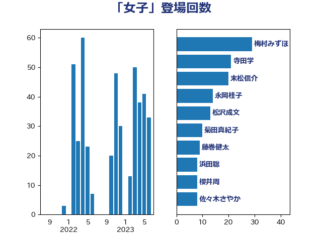

単語「女子」

| 梅村みずほ | 日本維新の会 | 29 回 |
| 寺田学 | 立憲民主党 | 21 回 |
| 末松信介 | 自由民主党 | 20 回 |
| 永岡桂子 | 自由民主党 | 14 回 |
| 松沢成文 | 日本維新の会 | 13 回 |
| 菊田真紀子 | 立憲民主党 | 10 回 |
| 藤巻健太 | 日本維新の会 | 9 回 |
| 浜田聡 | NHK党 | 8 回 |
| 櫻井周 | 立憲民主党 | 8 回 |
| 佐々木さやか | 公明党 | 8 回 |
| 齋藤健 | 自由民主党 | 7 回 |
| 林芳正 | 自由民主党 | 7 回 |
| 井上哲士 | 日本共産党 | 7 回 |
| 齊藤健一郎 | 無所属 | 6 回 |
| 宮崎雅夫 | 自由民主党 | 6 回 |
| 長友慎治 | 国民民主党 | 5 回 |
| 竹内真二 | 公明党 | 5 回 |
| 生稲晃子 | 自由民主党 | 5 回 |
| 柚木道義 | 立憲民主党 | 5 回 |
| 山谷えり子 | 自由民主党 | 5 回 |
| 小沢雅仁 | 立憲民主党 | 5 回 |
| 吉良よし子 | 日本共産党 | 5 回 |
| 福島みずほ | 社会民主党 | 4 回 |
| 田中昌史 | 自由民主党 | 4 回 |
| 源馬謙太郎 | 立憲民主党 | 4 回 |
| 松島みどり | 自由民主党 | 4 回 |
| 早稲田ゆき | 立憲民主党 | 4 回 |
| 山口那津男 | 公明党 | 4 回 |
| 吉田はるみ | 立憲民主党 | 4 回 |
| 中川康洋 | 公明党 | 4 回 |
| 阿部知子 | 立憲民主党 | 3 回 |
| 池畑浩太朗 | 日本維新の会 | 3 回 |
| 岸田文雄 | 自由民主党 | 3 回 |
| 堀場幸子 | 日本維新の会 | 3 回 |
| 吉田とも代 | 日本維新の会 | 3 回 |
| 高木啓 | 自由民主党 | 2 回 |
| 青島健太 | 日本維新の会 | 2 回 |
| 鈴木貴子 | 自由民主党 | 2 回 |
| 西岡秀子 | 国民民主党 | 2 回 |
| 片山大介 | 日本維新の会 | 2 回 |
| 熊谷裕人 | 立憲民主党 | 2 回 |
| 水野素子 | 立憲民主党 | 2 回 |
| 武井俊輔 | 自由民主党 | 2 回 |
| 日下正喜 | 公明党 | 2 回 |
| 新垣邦男 | 立憲民主党 | 2 回 |
| 庄子賢一 | 公明党 | 2 回 |
| 川田龍平 | 立憲民主党 | 2 回 |
| 山下貴司 | 自由民主党 | 2 回 |
| 小野田紀美 | 自由民主党 | 2 回 |
| 小西洋之 | 立憲民主党 | 2 回 |
| 小倉將信 | 自由民主党 | 2 回 |
| 嘉田由紀子 | 無所属 | 2 回 |
| 勝目康 | 自由民主党 | 2 回 |
| 加藤勝信 | 自由民主党 | 2 回 |
| 伊藤孝恵 | 国民民主党 | 2 回 |
| 仁木博文 | 無所属 | 2 回 |
| 高階恵美子 | 自由民主党 | 1 回 |
| 高良鉄美 | 無所属 | 1 回 |
| 高木かおり | 日本維新の会 | 1 回 |
| 階猛 | 立憲民主党 | 1 回 |
| 鎌田さゆり | 立憲民主党 | 1 回 |
| 金子恭之 | 自由民主党 | 1 回 |
| 野田聖子 | 自由民主党 | 1 回 |
| 赤澤亮正 | 自由民主党 | 1 回 |
| 赤嶺政賢 | 日本共産党 | 1 回 |
| 緑川貴士 | 立憲民主党 | 1 回 |
| 米山隆一 | 立憲民主党 | 1 回 |
| 石井準一 | 自由民主党 | 1 回 |
| 田村貴昭 | 日本共産党 | 1 回 |
| 浜田靖一 | 自由民主党 | 1 回 |
| 河野義博 | 公明党 | 1 回 |
| 沢田良 | 日本維新の会 | 1 回 |
| 松川るい | 自由民主党 | 1 回 |
| 杉田水脈 | 自由民主党 | 1 回 |
| 早坂敦 | 日本維新の会 | 1 回 |
| 後藤茂之 | 自由民主党 | 1 回 |
| 平林晃 | 公明党 | 1 回 |
| 川崎ひでと | 自由民主党 | 1 回 |
| 川合孝典 | 国民民主党 | 1 回 |
| 岩谷良平 | 日本維新の会 | 1 回 |
| 山田勝彦 | 立憲民主党 | 1 回 |
| 山本香苗 | 公明党 | 1 回 |
| 小泉進次郎 | 自由民主党 | 1 回 |
| 宮路拓馬 | 自由民主党 | 1 回 |
| 宮本徹 | 日本共産党 | 1 回 |
| 大西健介 | 立憲民主党 | 1 回 |
| 大石あきこ | れいわ新選組 | 1 回 |
| 塩村あやか | 立憲民主党 | 1 回 |
| 堂故茂 | 自由民主党 | 1 回 |
| 吉田久美子 | 公明党 | 1 回 |
| 佐々木紀 | 自由民主党 | 1 回 |
| 伊藤孝江 | 公明党 | 1 回 |
| 仁比聡平 | 日本共産党 | 1 回 |
| 中条きよし | 日本維新の会 | 1 回 |
| 中川郁子 | 自由民主党 | 1 回 |
| 上月良祐 | 自由民主党 | 1 回 |